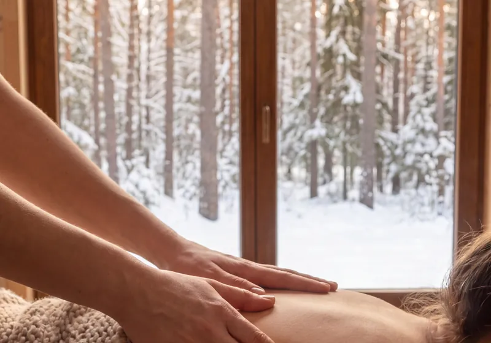

Atmosphere · palpo.org
The massage room, season by season
Snow outside, warm stones inside. Free to download, in high quality.
Winter
Coat off, scarf off. The shoulders come down last.


Christmas
The quiet part of the holidays.


You are welcome to download these for your phone, your desk, or to send to someone. For sale or advertising, only with permission. © 2026 HARDZIYENKA ALIAKSEI · palpo.org